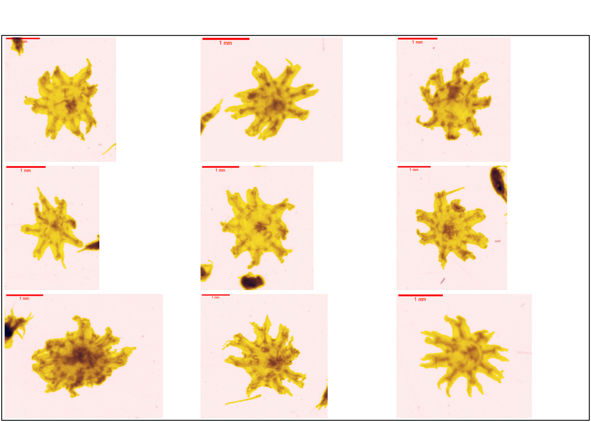
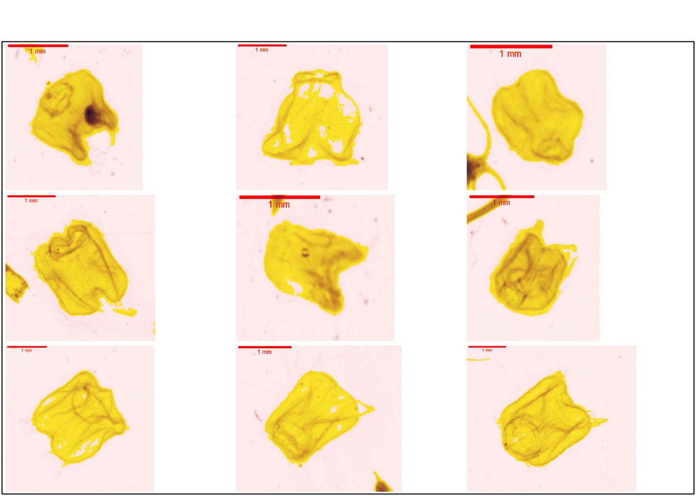

source("R/init.R")
vigns <- fs::dir_ls(
here::here(training_dir, "Plankton_gelatinous"),
type = "file", glob = "*.png", recurse = TRUE)4 Plankton_gelatinous
4.1 Tunicata
4.2 Chaetognatha
4.3 Ctenophora
4.4 Cnidaria
4.4.1 Scyphozoa
Les schyphozoaires sont communément appelé méduses. Ces organismes sont à la fois benthiques et pélagiques (Licandro, Fischer, et Lindsay 2017). Les stades successifs du développement des méduse est présenté ci-dessous.

4.4.1.1 Scyphozoa_ephyra
Le stade ephyra est aisément reconnaissable de par sa symétrie de 8. Il est possible d’affiner cette classification en s’intéressant à la distinction entre les Semaeostomeae et les Rizostomeae se base principalement sur la morphologie des canaux radiaux et adriaticaux.
plot_vignettes(vigns, group = "Scyphozoa_ephyra")
4.4.1.2 Scyphozoa_medusa
TODO
4.4.2 Hydrozoa
4.4.2.1 Siphonophorae
Les siphonophores sont en une colonie d’individus que l’on nomme zoïdes. On discrimine différent zoïdes par rapport à leur fonctions nectophore (locomotion), gastrozoïde ( digestion), pneumatophore (flottaison) (Licandro, Carré, et Lindsay 2017).
4.4.2.1.1 Abilidae
4.4.2.1.2 Diphydae
4.4.2.1.3 Physonectae
Physonectae_nectophore
Ces organismes sont constitués d’un pneumatophore contrairement aux Calycophore. La forme particulière de ces organismes la rend aisément identifiables.

Ce groupe s’apparente au groupe des nectophore_Physonectae présent dans le ZooScanNet.
plot_vignettes(vigns, group = "Physonectae_nectophore")